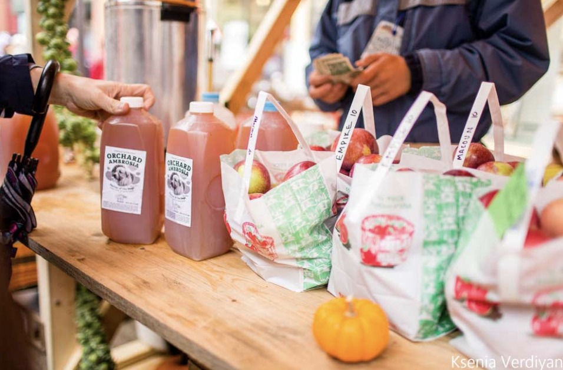

With over 100 vendors present at the festival, there are many opportunities to be introduced to the rich artisan and culinary community in Ithaca. Our food vendors feature apple-centric and other fall classics for you to taste, and the craft vendors offer homemade goods like soaps, jewelry, sculptures, clothing, and more! This is the perfect place to learn about and support Ithaca's small businesses that encompass the heart of the town.
Food vendors:
Macarollin
Mr. Squeeze Lemonade
Kettle Corn Shoppe
SPM Empanadas
Fittnell Barbeque
Tibetan Momo Bar
Travelers Kitchen
Asempe Kitchen
Vail Bros inc
On The Street Pitas
Silo Food Truck
B&B Kettle Korn
Robbie’s Produce
PDRS Catering

Trini Style
Coltivare
She Messy Tacos
Adam Grill
Thai Basil
Zocalo
Yxi's Arepas & Gordito
Solaz
Monks on the Commons
Smash Bros World Foods
The Yellow Deli
Thai Palace
Lou's Covert Kitchen
Playland Amusements Concessions
Open Air Market:
Schweigarts Sugar Shack
Schoolyard Sugarbush
A J Teeterfarm
Littletree Orchards
Creamcycle
Maple River Syrup Company
MacDonald Farms
Cornell Society of Horticulture
Laughing Goat Fiber Farm
Robbie’s Produce
Picaflor Farm
Little Farm Bakery
Little Grey Bakery
Mojo Hot Sauce
Restaurants:
Here are some popular restaurants that people tend to go to and their peak busy times, in case you get hungry from all the festivities.
The Ithaca Ale House
111 N. Aurora St, Ithaca, NY 14850
American pub food
Peak busy times: Weekends after 5pm
Moosewood Restaurant
215 N. Cayuga St, Ithaca, NY 14850
Vegetarian and vegan cuisine
Peak busy times: Weekends after 6pm
Just A Taste
116 N. Aurora St, Ithaca, NY 14850
Spanish tapas
Peak busy times: Weekdays after 5pm, weekends after 6pm
Sangam Indian Cuisine
424 Eddy St, Ithaca, NY 14850
Indian cuisine
Peak busy times: Weekdays after 5pm, weekends after 6pm
Gorgers Taco Shack
111 E. State St, Ithaca, NY 14850
Tacos and Mexican cuisine
Peak busy times: Weekends after 5pm